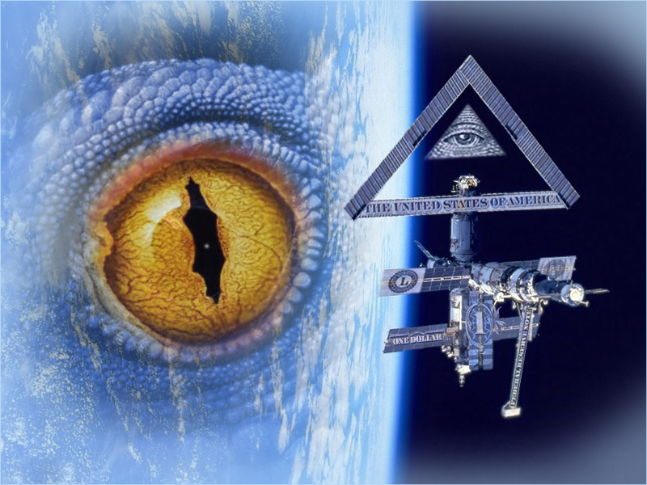

Los Reptiloides, son supuestos reptiles humanoides que juegan un papel destacado en la ufología y en las llamadas teorías conspiratorias modernas. Al tratar de explicar un origen, se ha propuesto su supuesto origen como la evolución de una raza inteligente en el planeta Tierra paralelamente a la humanidad, de origen extraterrestre o intraterrestre, entidades sobrenaturales o los restos de una antiquísima civilización pre-humana.
Quetzalcóatl es el nombre azteca de la deidad descrita como Serpiente Emplumada de la antigua Mesoamérica, uno de los principales dioses de muchas civilizaciones en lo que es hoy México y Centroamérica. El nombre Quetzalcoatl literalmente significa (serpiente emplumada) Quetzal Serpiente o serpiente con plumas de Quetzal (El Quetzal tiene connotaciones divinas en estas civilizaciones). Relacionados a este estánKukulkan, de los mayas y Gukumatz de los Quiche.
Cécrope I, el mítico primer rey de Atenas era mitad hombre, mitad serpiente. Se ilustra como ejemplo en un friso en el altar de Zeus de Pergamo. Medio Oriente En la cultura del Egipto antiguo nos encontramos con las imágenes de Sobek. En las culturas judaica y cristiana, en Génesis, se relata como Adán y Eva son seducidos por la Serpiente para alimentarse del Árbol del Conocimiento (del Bien y el Mal), y como consecuencia son expulsados del Edén.
En escrituras y leyendas de la India, los Naga son descritos como seres reptilianos que viven subterráneamente y que interactúan con los seres humanos en la superficie. En algunas versiones se dice que estos seres vivieron alguna vez en un continente en el océano Índico y que se hundió en las aguas. Textos de la India también hacen referencia a los Sarpa .
Los chinos, vietnamitas, coreanos y japoneses hablan en su historia acerca de (Lóng) (Yong en coreano, Ryu en japonés) o dragones, concebidos en ambas formas físicas y metafísicas, pero raramente descritos en forma humanoide. En el folklore de Japón se habla de seres como los Kappa, demonios acuáticos anfibios con aspecto de tortuga y pico de pájaro, y también de Orochi, una serpiente monstruoso similar a laHydra occidental.
El concepto dinosauroide surge de una investigación sobre los dinosaurios terópodos como el Troodon, y el Saurornithoides. Dado que estos animales poseían el cerebro más grande -comparado con el tamaño de su cuerpo- del período Mesozoico, algunos han especulado que de no haberse extinguido, estos animales habrían tenido la probabilidad de evolucionar hasta una forma parecida a la humana. Cabe destacar que este concepto no tiene ningún asidero científico y solo fue desarrollado dentro del marco especulatorio.
Los belatricianos son una supuesta raza extraterrestre cuya existencia no ha sido comprobada. Los belatricianos son descritos como seres reptiloides con cierto resplandor fosforescente en la piel. Su color es entre anaranjado y amarillo y visten trajes espaciales. El supuesto médium Sheldan Nidle y su pareja Coreen Marshall, aseguran canalizar mensajes de los belatricianos para la Humanidad. Según la pareja de supuestos contactados, los belatricianos fueron una cruel raza de tiranos galácticos, ahora arrepentidos y deseosos de lograr la paz y ser aceptados dentro de la Galaxia. De allí su deseo por corregir las atrocidades del pasado y convertirse en miembros responsables de la Federación Galáctica. Son famosos dentro de las teorías de conspiraciones y muchos estudiosos del fenómeno OVNI; y son una tipología que presenta la mayoría de sus supuestas apariciones en los Estados Unidos, siendo prácticamente nulos los reportes de reptilianos en otros países.
Gracias a la obra del escritor británico David Icke, la figura del reptiliano ha renacido con bastante popularidad, asociándola a teorías conspiratorias de dominación mundial por parte de los reyes, jefes de estado, aristocracia, magnates financieros muy ligados a la masonería contra la humanidad.
Dick York, líder sectario estadounidense condenado por abuso sexual infantil, creó el Nuwaubianismo como una religión de nacionalismo negro derivada de la Nación del Islam. Dentro de su doctrina se incluye -entre otras cosas- que diferentes especies extraterrestres reptiloides operan dentro de la Tierra.
Es difícil de creer pero hay quienes afirman que existen o han existido hombres reptiles en nuestro planeta, seres con forma humana pero rostro de reptil, llamados reptiloides. Los reptiloides habrían existido antes que la raza humana y no se han extinguido como muchos creen, sino que viven hasta la actualidad escondidos en cuevas subterráneas o en la parte interior de la Tierra ya que se dice que nuestro planeta podría ser hueco y tener toda una civilización que se desarrolla y evoluciona igual que nuestra raza. Esta singular y extraña civilización estaría desarrollándose en tecnología similares a las nuestras y esperan en años posteriores regresar a la superficie con la preocupante intensión de reclamar la posesión de la misma por considerar que ellos fueron los primeros habitantes del planeta. Pero la pregunta es: de dónde apareció esta raza extraña de seres? Se dice que tienen origen extraterrestre, sus primeros habitantes llegaron hace muchos años y lograron adaptarse rápidamente a la vida en la tierra. Es más, se cree que los reptiloides vivían en perfecta armonía con los antiguos habitantes de la Tierra, pero existe alguna razón o enigma que los obligó a vivir en el interior del planeta. La teoría de la existencia de los reptiloides se basa en los escritos y figuras encontradas de las antiguas civilizaciones, donde dejan constancia indudable que su convivencia con estos extraños seres. Otra prueba de la existencia de los reptiloides, son las apariciones que han hecho de manera espontánea, los casos más resaltantes son: - En la ciudad de Ohio Estados Unidos, se vio un reptiloide que se le bautizó como la Rana de Loveland, se le vio el año 1955. - En Bishopville, Carolina del Sur se vio un hombre lagarto en el año 1988. Son varios los testimonios de avistamientos de estos seres extraños, incluso algunos efectivos de la policía declaran haberse involucrado en la búsqueda de estos seres extraños, sin más resultados que huellas características de los reptiles pero de tamaño descomunal.
Existen referencias de los reptiloides en muchos textos e iconografía artística, por ejemplo en los templos de Egipto o en estatuas de Irak ( se dice que la guerra de Irak también fue para recuperar estos tesoros). Otras muchas han sido destruidas, por ejemplo en la Biblia, junta a las referencias de la Atlantida, donde una raza de reptiloides, los alfadraconis peleaban con otros aliens y humanos. Hay muchos monumentos enigmáticos prehistoricos que apunta a la Costelación de Alfa Draconis. ¿Por qué será?. Los ufólogos y abudcidos citan muchos tipos de reptiloides, siendo los más famosos los aliens grises. William Cooper asegura que el gobierno de EE UU ha pactado con ellos y que ayudan a controlar y manipularnos y que son los culpables del caos, terrorismo y explotación de la humanidad.El tema se repite en muchas películas de Hollywood y de la televisión, como la Serie V. Algunos eruditos me han confirmado que existen y existían los reptiloides, pero no quieren hacerlo público, también me lo han confirmado niños índigo videntes y canalizadores. David Icke ha resucitado el Tema. Dice que estos reptiloides tienen conexiones con las élites y que todos juntos nos dominan, especialmente a través de los dirigentes iluminati, aristocracia y mafia X. Asegura que hay una genealogía oculta que los relaciona a todos. Se dice que son muy avanzados y que puden hacer que no les veas y dominar tu cerebro para que veas lo que quieras. Lo mismo hacen con sus ovnis en forma de cigarro, que no pueden ser vistos por tus ojos, pero si fotografiados.